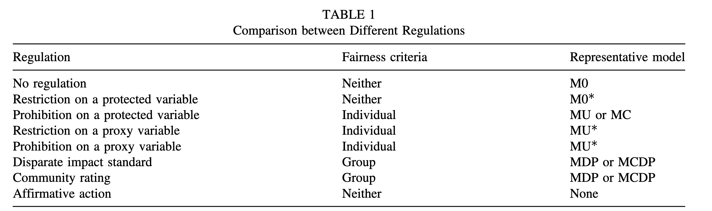

权衡取舍、整合与治理
幻灯片 — 第八章
今日安排
2小时20分钟课程,课程总结环节。五个部分,六次课堂讨论
| 时间 | 部分 |
|---|---|
| 0:00 – 0:20 | 回顾:我们已经学过什么 |
| 0:20 – 0:45 | 关键的权衡取舍 |
| 0:45 – 0:55 | 休息 |
| 0:55 – 1:45 | 一个整合性框架:生命周期,以及一个综合练习 |
| 1:45 – 2:10 | 实用治理 |
| 2:10 – 2:20 | 课程总结 |
学习目标
- 总结并串联第二至七章的方法
- 识别并分析公平性、可解释性、隐私之间的权衡取舍
- 将伦理人工智能生命周期作为整合性框架加以应用
- 设计治理与文档记录工作流程
- 依据六项原则批判性地评估一个人工智能系统
第一部分 — 回顾
三大支柱,六个章节
| 章节 | 支柱 | 关键方法 |
|---|---|---|
| 2–3 | 公平性 | 准则(FTU、CPV、DP、CDP……);五种模型设计;公平性—准确性权衡取舍;COMPAS(美国再犯风险评估工具) |
| 4–5 | 可解释性 | PFI、PDP、ALE、SHAP、LIME;全局+局部;交互效应 |
| 6–7 | 隐私 | 重新识别风险、k-匿名性、差分隐私、合成数据 |
没有任何一章是自成一体的。 一个真实的系统必须同时兼顾全部六项伦理原则。管理它们之间的相互作用,正是本章的内容。
案例研究:基于信用的车险评分
精算公平性的局限
- 自20世纪90年代初以来,美国车险公司在定价时部分依据基于信用的保险评分——这正是精算公平性的典型体现:按照个人真实的预期成本收费
- 该评分确实具有预测效力,但这一做法仍引发了持续的监管反弹:至少17个州展开调查、5场国会听证会、数十项限制性州法律 (Kiviat 2019年)
- 监管者的异议在于:预测本身并不能决定谁”应得”支付更高保费——他们要求解释评分为何能预测理赔,而不只是确实能预测
- 如今大多数州要求保险公司对与离婚、失业、医疗急症等有据可查的不幸遭遇相关的负面信用记录不予计入(“特殊生活情形”豁免条款)
- 2007年FTC报告显示:超过25%的非裔美国消费者评分处于最低十分位,白人消费者仅3%——但评分在每个种族群体内部仍具有预测力,因而依据精算公平性自身标准仍属”公平”
- 结果:仅有4个州全面禁止这一做法——其余所有州均在允许该做法继续存在的前提下施加限制(披露要求、豁免条款、限制可用因素)
一项标准即便在统计上有效、并满足某个被明确命名的公平性定义,仍可能被认定为不正当。 应由哪种标准来支配某项实践,本身是一个存在争议的政治性判断,而非纯粹的量化问题。
重访最初的引导性问题
第一章:剔除性别变量的保险公司
发动机排量和年行驶里程都被保留了下来。它们都与性别相关。这家保险公司是否已经实现了公平?
现在你可以更严谨地回答这个问题了:
- 第二章:也许满足 FTU 公平,但很可能不满足 DP 或 CDP 公平。
- 第三章:拟合 MCDP 或 MC,并用预先设定的 TOST 进行审计(证明合规性,而非仅仅是未能发现违规)。
- 第四、五章:用 SHAP 找出驱动残余差异的因素,并检查交互效应。
- 第六、七章:评估数据中的重新识别风险,考虑差分隐私或合成数据是否应纳入流程之中。
💬 讨论(4分钟)
综合运用第二至七章的全部内容——
a. 你现在会如何回答“这家保险公司是否已经实现了公平”?即便拥有了所有这些工具,还缺少什么?
b. 以保险业为例:即便发动机排量或年行驶里程都各自具备与风险相关的、非歧视性的合理理由,你会如何判断这类变量究竟应当被用于定价,还是应当被彻底排除?如果该变量是外部的、非传统的数据——例如远程信息处理数据、社交媒体活动或信用记录,而非保险公司出于自身精算目的所收集的数据——情况又会有何不同?
第二部分 — 关键的权衡取舍
三种根本性张力
1. 公平性与准确性。 公平性约束会削弱可用的预测信息
2. 可解释性与性能。 更简单的模型更易解释但通常不如复杂模型准确,事后解释工具会增加计算量和近似误差
3. 隐私与效用。 k-匿名性、差分隐私和合成数据都会降低信息含量
每一支柱都会产生可能与其他支柱相冲突的义务。
公平性—准确性权衡取舍
| 模型 | 准确性 | 差异 |
|---|---|---|
| M0 | 最高 | 最大 |
| MU | 中度降低 | 中度降低 |
| MCDP / MC | 小幅降低 | 大幅降低 |
| MDP | 降低幅度最大 | 接近零 |
准确性以 RMSE 衡量(误差越小,准确性越高);“降低”指随着公平性约束收紧,准确性相对 M0 水平的下降幅度。
并非总是权衡取舍。 当误差本身在各群体间分布不均时,引入公平性约束的模型有时能够同时缩小差异并提升准确性——实现真正的双赢 (Huang 等 2024年)。
这是政策决策,而非建模决策
不存在统计意义上“正确”的约束水平。取决于监管制度、产品类型、利益相关方价值取向、市场结构。从业者量化权衡取舍。决策者做出选择。
隐私—效用权衡取舍
| 技术 | 保证 | 效用代价 |
|---|---|---|
| k-匿名性 | 无正式保证 | 精度降低,部分抑制 |
| 差分隐私(ε=1) | 强 | 噪声大 |
| 差分隐私(ε=10) | 弱 | 噪声小 |
| 合成数据(无差分隐私) | 无 | 保真度高,存在记忆风险 |
实践中各类技术会被叠加使用:k-匿名化 → 合成 → 检查 NNDR(最近邻距离比)→ 对发布的汇总统计量应用差分隐私。是纵深防御,而非单一灵丹妙药。
可解释性 ↔︎ 公平性
揭示:一张显示“邮编”主导保费(客户为其保单支付的价格)变动的 SHAP 蜂群图,可以标记出公平性模型未能捕捉到的代理歧视。
掩盖:SHAP 和 LIME 可能被对抗性操纵 (Slack 等 2020年)。一个模型可以在审计人员看来无害,同时在生产环境中依然存在歧视。
解释工具用于生成假设、指导准则选择。它们不能替代正式的公平性测试。
💬 讨论(4分钟)
如果解释工具可以被操纵得看似公平——
究竟什么才能真正让你信任一家供应商关于公平性的宣称?
休息 — 10分钟
第三部分 — 一个整合性框架
重访伦理人工智能生命周期

伦理人工智能生命周期。来源:Huang (2025年)。
现在,我们为每个阶段填充具体的负责任人工智能义务。
第一至三阶段
1. 问题定义。 人工智能是否恰当?哪一项准则适用?谁负责?
2. 数据收集。 有法律依据吗?存在历史性偏见吗?有准标识符吗?是否最小化?
3. 模型开发。 模型设计是否恰当?代理变量是否已处理?是否足够可解释?权衡取舍是否已量化?
第一阶段的错误选择,无法通过之后更好的建模来纠正。
第四至六阶段
4. 验证。 是否有预先设定的审计?是 TOST 而非单纯的显著性检验吗?跨期是否稳定?
5. 部署。 边缘案例是否有人工复核?是否具备可申诉性?数据保护影响评估(DPIA)是否完成?
6. 监测。 公平性指标是否重新计算?数据漂移是否被追踪?是否设有重新训练触发机制?
💬 讨论(4分钟)
在这六个生命周期阶段中——
你认为大多数人工智能失效实际上起源于哪一个阶段,即便它们要到很久之后才会显现出来?
综合案例研究:理赔分流
一家车险公司正在构建一套人工智能理赔分流系统:每一笔新提交的理赔,都会获得一个欺诈风险与复杂度评分。评分较低 → 48小时内快速赔付。评分较高 → 在赔付前转交人工调查。
- 公平性:如果该评分与邮编或车型相关,是否会导致最经不起延迟的理赔人,恰恰也是最有可能被延迟的人?
- 可解释性:赔付被延迟的客户,是否知道原因,能否提出申诉?
- 隐私性:该模型需要理赔叙述文本、伤情细节、第三方记录,而这些恰恰是数据共享协议需要加以保护的内容。
🧩 练习(15分钟)— 逐一梳理生命周期
针对每一个阶段,请使用该章节自身的工具作答,而非泛泛而谈。
| 阶段 | 应用问题 | 章节 |
|---|---|---|
| 1. 问题定义 | 假阳性与假阴性各自的代价是什么,分别由谁承担?是否可逆? | 1 |
| 2. 数据收集 | 理赔历史数据中是否存在历史性偏见?叙述文本是否已最小化? | 6 |
| 3. 模型开发 | 适用哪一项公平性准则?哪种设计能保留欺诈信号? | 2、3 |
| 4. 验证 | 什么样的审计规程能证明、而非仅仅未能反驳公平性? | 2、3 |
| 5. 部署 | 是具体的解释加真正的申诉渠道,还是仅仅一则通用通知? | 4、5 |
| 6. 监测 | 欺诈模式发生变化后,什么条件会触发重新验证? | 3、6 |
🧩 练习(续)— 权衡取舍
请从逐阶段的视角中退后一步:
- 一个更严格的欺诈模型(更少真实欺诈获赔,更多真实理赔被延迟)是否站得住脚?该由谁决定,依据什么证据?
- 出于隐私考虑而最小化理赔数据,是否恰恰移除了欺诈模型所需要的细节?第六、七章中是否有某种技术,能够降低这一代价,而非径直接受它?
- 应选择更准确但可解释性更弱的模型,还是准确性稍逊但透明度更高的模型?这里的解释义务是面向某一位具体的理赔人,而不仅仅是监管机构。
没有标准答案。 你应当对每一个问题都形成有理有据的立场,并能诚实地说明,哪些权衡取舍是你真正解决了的,哪些只是被你承认、但并未解决。
监管 → 准则 → 模型

监管制度、公平性准则与模型设计之间的映射关系。来源:Xin 和 Huang (2024年)。
监管制度 → 准则 → 模型设计 → 可解释性负责验证 → 隐私保护整个流程。
第四部分 — 实用治理
模型文档(模型卡)
模型卡是一份简短、标准化的文档,面向任何审计、接手或批准该模型的人员,对模型加以概述。
用途 · 数据 · 公平性准则 · 性能 · 公平性审计 · 可解释性摘要 · 隐私评估 · 局限性 · 责任人与审阅人
文档记录使一项治理主张变得可以被核实,而不仅仅是被宣称。
六项治理实践
来源:National AI Centre AI6 指南 (National AI Centre 2025年)
- 问责制。 指定责任人,包括供应商系统
- 影响评估。 谁可能受到伤害,特别是弱势群体
- 风险管理。 因情境而异,因为同一模型在不同部署环境下可能承载不同风险
- 透明度。 登记所有在用的人工智能系统
- 测试与监测。 部署前测试,部署后持续监测
- 人为控制。 真正的干预点,而非流于形式的签字确认
重要
供应商问责不可转移。 监管机构追责的对象是部署机构(第一章 ASIC REP 798)。
治理是一种文化,而非一份核对清单
| 职能 | 责任 |
|---|---|
| 风险与合规 | 拥有该框架,设定风险偏好(组织愿意承担多大风险) |
| 技术与数据 | 将其融入流程,持续监测 |
| 一线用户 | 真正的监督,知道何时以及如何否决 |
只有在一个明确分配了责任归属、并赋予人员真正干预权力的组织内部,工具才能产生一个真正可信的系统。
选择恰当的工具
| 任务 | 工具 |
|---|---|
| 哪些变量驱动预测结果 | PFI、分组 SHAP |
| 某一变量效应的形态 | PDP、ALE |
| 解释单条预测 | SHAP 瀑布图 |
| 检测交互效应 | H统计量、SHAP 交互值 |
| 执行人口统计学均等性 | MDP、MCDP |
| 合规性审计 | TOST + HC3 |
| 评估重新识别风险 | sdcMicro |
| 对外共享数据 | 合成数据 + NNDR |
第五部分 — 课程总结
我们最初想要做的事
负责任人工智能 = 使创新变得可辩护。
- 该模型是否公平地对待人?(公平性)
- 决策能否被理解和证明合理?(可解释性)
- 个人数据是否得到恰当使用?(隐私)
本课程无法做到的事
- 准则存在争议。 哪一项适用是社会性/政治性问题,而非统计学问题
- 方法都有假设前提。 在信任输出结果之前,先了解这些假设
- 监管在不断演变。 我们所涵盖的大部分内容都是在过去三年内被撰写的
- 交互效应难以预见。 单独看公平+可解释+保护隐私 ≠ 组合起来就安全
- 本课程聚焦于结构化数据模型。 生成式人工智能共享相同的原则,但也带来了新的失效模式(第二、四、六章的大语言模型部分曾有所涉及)
💬 讨论(5分钟)— 总结
在这五项局限性中——
对于你在本课程结束后可能会构建或评估的系统而言,哪一项最让你担忧?
整合性的视角
它不是一份在部署前完成一次即可的核对清单。而是贯穿整个生命周期的持续过程,从问题的提出到模型的退役。
从业者的责任
“精算职业应当在建立公众对人工智能系统的信任方面发挥引领作用,而非被动跟随。” —— Huang (2025年)
同样的位置(量化方法的娴熟运用、对经认证模型承担责任、在技术与非技术利益相关方之间发挥桥梁作用),同样适用于信贷风险分析师、人力资源分析主管,以及临床决策支持负责人。
推荐阅读
谢谢大家
欢迎提问、反馈与持续交流。这是教学大纲的终点,而不是问题的终点。